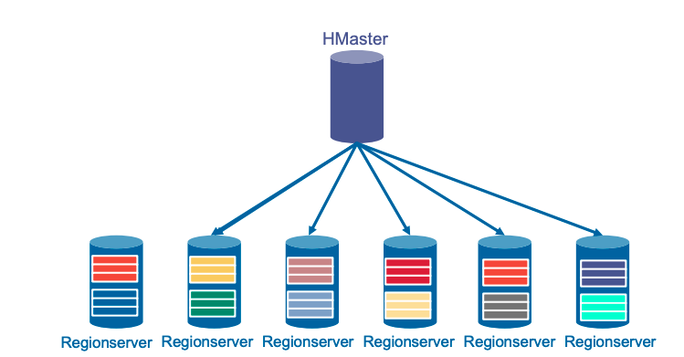
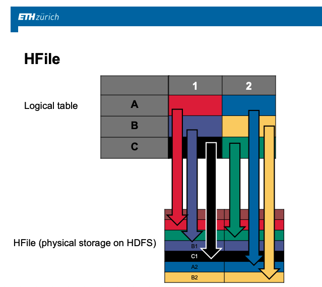
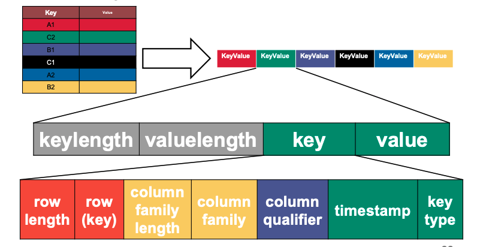
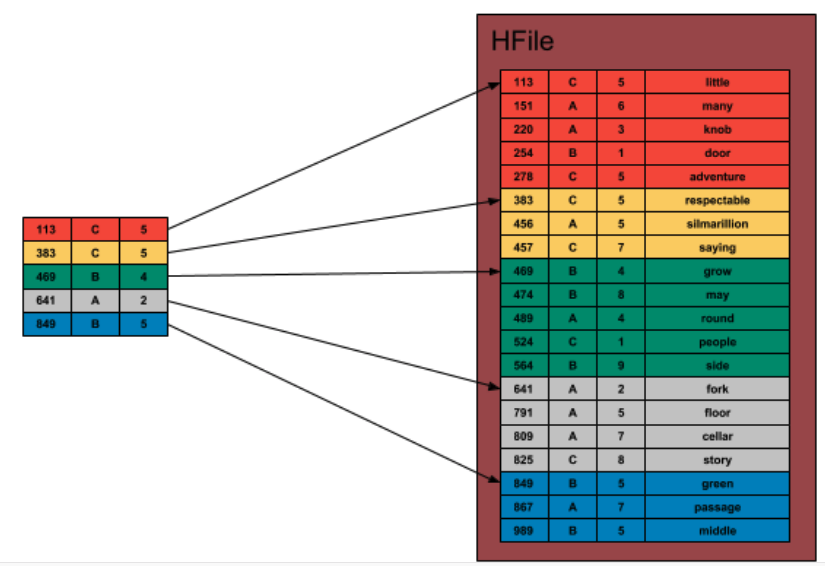
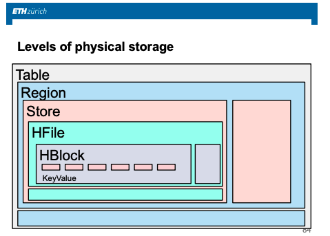

Wide Column Store - HBase
The idea of wide column store is to extend the idea of RDBMS, i.e. storing and managing data in tabular format, and to bring it into the BigData world.
This post will briefly address the different characteristics of Hbase. I.e. it will first look at the logical idea for keeping data in a tabular form in the big data world. It will then look at the architecture behind Hbase and as you will see the basis for it is the good old master-slave in parallel to HDFS that will be here used as the storage layer.
Finally it will briefly address the physical storage layer.
On the logical Model
As we will see briefly HBase stores the data through HDFS. The idea of Hbase and in general of wide-store technologies is to leverage big data technologies to go away from the old SQL paradigm of having multiple separate tables in Boyce-Codd normal form and joined through their primary keys but rather to have a unified - very big table - that represent the entire view of your business data and that are handled directly using master-slave architecture and the HDFS technology.
The general idea is therefore: save everything in one big table; and save together was is accessed together.
Notice that in contrast to standard RDBMS where you had a limit on the amount of columns it was possible to store - i.e. usually 256 - . In this context the extent of the table is massively different so that you can have millions of columns and billions of rows. You can get easily to such numbers given the de-normalization process discussed.
The question is now clear that given the goal of storing together material that is accessed together, we need a definition for the latter. The idea in wide column store is that it is left to the user to specify column-families, i.e. a group of columns that is usually accessed together - say for instance booking and cancellation records -.
Important is to underline that in contrast to the old SQL standard you do not have to specify the schema fully in advance but you rather have to specify the column-families of your wide-store. Individual columns belonging to a column family might then be added on the fly without the need of specifying and creating a new table.
The logical model would then look as follows:
Moreover notice that due to the denormalization such table is typically very sparse.
Physical Layer Introduction
Given a basic understanding of the goal of wide-column store, we turn to the physical level.
Recall that the basis is the HDFS storage system and that you want to store the content together which is accessed together.
The major two paradigm in this sense are the following:
-
row store
Here rows next to each other are stored together.
-
column store
Here adjacent columns are stored together.
Both have their merits. For instance in column store you might process your data in an optimized way as there is generally a consistency in the format of the data - i.e. all of type flot, int, string etc. -.
In contrast the row store might be beneficial for instance if data are stored following some temporal structure so that data in a given time frame are generally accessed together and lie close to each other. I.e. in general if you index your data such that data that are accessed together are stored together then the benefit of row store.
Wide-column store does not use any of the two methods but rather takes a hybrid approach leveraging the two.
In this sense you store data by partitions, defined as a set of
contiguous row-ids (term: region); and its intercept with each
individual column family.
Important is however, the hierarchical way in which the data are stored. Recall that the data are stored via HDFS so that data are distributed among many different machines.
Notice, that individual regions are stored on the same machine. This means that you save in fact the different intersection among a single region and the column families on the same machine. Different stores, i.e. intercept of regions and column families are then stored in hdfs blocks so that they might be accessed in a fast and independent way.
Architecture
Recall that as mentioned a couple of times the architecture is a master-slave architecture that acts in parallel to HDFS.
While HDFS manages the data block replication, update and retrieval
through its master NameNode and slave DataNode, Hbase master
(HMaster) manages the data definition language for your table;
i.e. the table creation, column family defintion, table deletion etc.,
assigning moreover regions to RegionServers (slaves).
Notice that RegionServers are not responsible for storing the data
(i.e. its software implementation does not aim at that) cause this is
generally the task of the DataNodes. In fact the RegionServer
manages a set of regions (typically we have somewhere between ten to a
thousand regions per RegionServer). The RegionServer handles read
and write requests to the regions that it has loaded, and also splits
regions that have grown too large. I.e. the RegionServer directly
talks with the DataNodes to retrieve the data it is responsible for
and it also creates new regions if these grow to large.
It is therefore clear that due to the communication between the
RegionServer and the DataNodes it is a sensible decision to run
the Datanode saving the data of a particular region on the same
machine where the RegionServer is running. Like this you minimize
the network exchange and you save bandwidth.
Notice, that the HMaster assigns regions to the
RegionServers. There is however and important decision to be made by
the user, i.e. through which rule should you assign row-ids and by
product save data together?
The trade-off goes as follows:
- if you want to access and withdraw data fast, think for instance to
BI-squads, than you want to save data that are accessed together and
you should therefore assign close
IDsto such data. - if you want to make heavy lifting processing of the data, think for instance at data science squads, then you might even prefer to save data that are often accessed together separately, this in order to leverage the parallelization of compute engines , think for instance at MapReduce that is easy to run on wide-stores.
The general structure would then look as follows:

Physical Layer Cont'd
You have now a basic understanding of regions, column families, stores, and the master and slaves nodes.
The question is now on how a single store is actually stored through HDFS.
The idea is the following.

I.e. you create Hfiles, which practically consists of key-value
pairs.
Here,
- keys = combination of logical table row-id and column family.
- value = actually entry of the logical store.
In more detail each key-value pair would actually consist of the following information:

Notice that while the general structure for the HFiles is logically correctly represented as above; Hfiles actually operates in an even more layered way, as we will see next.
Hfile
The general structure of an Hfile would look as follows.

The idea is therefore that you would break an Hfile into several
HBlocks which would be saved on HDFS. You would then hold in the
RegionServer an index referring each key to an Hblock ID as in the
the image on the left on the left. Such index would be saved in
memory on the RegionServer.
Given the necessity to look up a particular entry by the
RegionServer given a specific user request the process would then be
the following:
- look for the Hblock index in memory.
- retrieve the entire Hblock from the Datnode.
- access the desired entry.
Notice then that the size of the Hblock is the size of the file that
will be opened in memory in the RegionServer. There is a price
between cost of seek of the file - if this is small - and a price in
the loading of the file into memory - if this is big -. There is
therefore again a trade-off and in the usual architecture you create
64kb Hblocks. Notice however that there might be deviations from the
number as a key-value pair is never allowed to be split and saved on
different Hblocks.
On the Append Only Issue
Notice that given the above indexed structure and HBlock storage of contiguous indexes if a user updates a record in the HBase logical table changing the index of the data entries you would have to rewrite the entire Hfile. Moreover given the append only nature of HDFS you do not have the option of entering new records at positions of choice in the document.
Given the above the architects of HBase went for the design of storing
modified or newly created HBase entries in memory on the
RegionServers. The idea is then the one of continuing to write on
this up until the memory of th machine is full and then to flush it by
writing a new HFile with sorted Key-value pairs while keeping the
old one.
In a next step you would then merge the two available Hfiles into
a single one compacting the information of them.
This is the idea of Log-Structured-Merge-Trees
Architecture in One Pic
